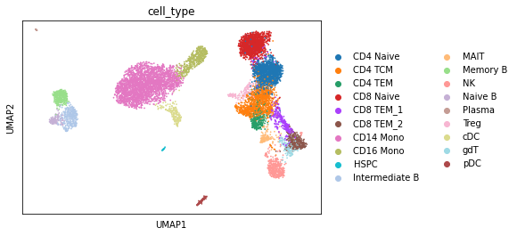
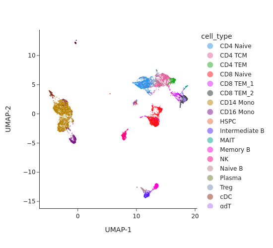
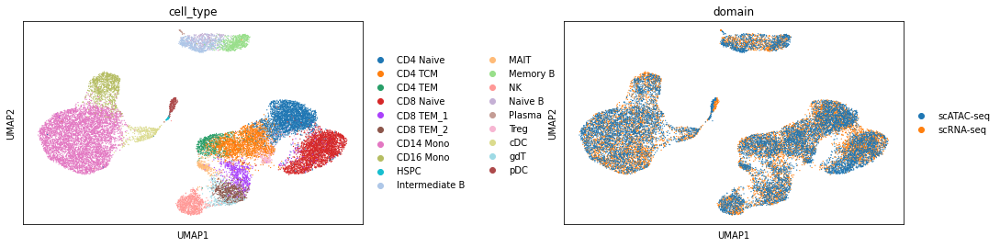

Multi-modality pipeline: analyzing single-cell multiome data (ATAC + Gene Expression)#
Introduction#
In this tutorial we will analyze single-cell multiome data data from Peripheral blood mononuclear cells (PBMCs). The dataset used in this tutorial can be found here: http://renlab.sdsc.edu/kai/10x-Multiome/.
In addition to SnapATAC2, we will utilize scanpy and scglue to perform the integration.
[1]:
import scanpy as sc
import snapatac2 as snap
import anndata as ad
import scglue
import itertools
Analyze gene expression data#
[2]:
rna = sc.read_h5ad("10x-Multiome-Pbmc10k-RNA.h5ad")
rna
[2]:
AnnData object with n_obs × n_vars = 9631 × 29095
obs: 'domain', 'cell_type'
var: 'gene_ids', 'feature_types'
First we backup the raw counts in anndata and perform the preprocessing.
[3]:
rna.layers["counts"] = rna.X.copy()
sc.pp.normalize_total(rna)
sc.pp.log1p(rna)
sc.pp.highly_variable_genes(rna)
rna = rna[:, rna.var.highly_variable]
sc.pp.scale(rna, max_value=10)
/home/kaizhang/data/software/miniconda3/lib/python3.8/site-packages/scanpy/preprocessing/_simple.py:843: UserWarning: Received a view of an AnnData. Making a copy.
view_to_actual(adata)
We then perform the dimension reduction, followed by UMAP embedding.
[4]:
sc.tl.pca(rna)
sc.pp.neighbors(rna)
sc.tl.umap(rna)
[5]:
sc.pl.umap(rna, color="cell_type")

Analyze chromatin accessibility data#
[6]:
atac = snap.read("10x-Multiome-Pbmc10k-ATAC.h5ad")
atac
[6]:
AnnData object with n_obs x n_vars = 9631 x 107194 backed at '10x-Multiome-Pbmc10k-ATAC.h5ad'
obs: cells, domain, cell_type
var: peaks, feature_types
obsm: X_umap, X_spectral
uns: spectral_eigenvalue
[7]:
snap.tl.spectral(atac, features=None, n_comps=30)
snap.tl.umap(atac)
Compute similarity matrix
Normalization
Perform decomposition
[8]:
snap.pl.umap(atac, color="cell_type", interactive = False)
/home/kaizhang/data/software/miniconda3/lib/python3.8/site-packages/polars/internals/frame.py:1675: UserWarning: setting a DataFrame by indexing is deprecated; Consider using DataFrame.with_column
warnings.warn(
[8]:

[9]:
atac.close()
Perform data integration#
First we need to assign genomic coordinates to the genes in scRNA-seq experiment. To do this, we need to download gene annotations from here.
[10]:
scglue.data.get_gene_annotation(
rna, gtf="gencode.v40.chr_patch_hapl_scaff.annotation.gtf.gz",
gtf_by="gene_name"
)
rna = rna[:, rna.var.dropna().index.to_numpy()]
rna.var.loc[:, ["chrom", "chromStart", "chromEnd"]].head()
[10]:
| chrom | chromStart | chromEnd | |
|---|---|---|---|
| genes | |||
| MEGF6 | chr1 | 3487950.0 | 3611508.0 |
| TNFRSF25 | chr1 | 6460785.0 | 6466175.0 |
| CAMTA1 | chr1 | 6785453.0 | 7769706.0 |
| SLC25A33 | chr1 | 9539464.0 | 9585173.0 |
| DHRS3 | chr1 | 12567909.0 | 12618210.0 |
[11]:
atac = ad.read("10x-Multiome-Pbmc10k-ATAC.h5ad")
sc.pp.neighbors(atac, use_rep="X_spectral")
atac
[11]:
AnnData object with n_obs × n_vars = 9631 × 107194
obs: 'domain', 'cell_type'
var: 'feature_types'
uns: 'spectral_eigenvalue', 'neighbors'
obsm: 'X_spectral', 'X_umap'
obsp: 'distances', 'connectivities'
[12]:
split = atac.var_names.str.split(r"[:-]")
atac.var["chrom"] = split.map(lambda x: x[0])
atac.var["chromStart"] = split.map(lambda x: x[1])
atac.var["chromEnd"] = split.map(lambda x: x[2])
atac.var.head()
[12]:
| feature_types | chrom | chromStart | chromEnd | |
|---|---|---|---|---|
| peaks | ||||
| chr1:816881-817647 | Peaks | chr1 | 816881 | 817647 |
| chr1:819912-823500 | Peaks | chr1 | 819912 | 823500 |
| chr1:825827-825889 | Peaks | chr1 | 825827 | 825889 |
| chr1:826612-827979 | Peaks | chr1 | 826612 | 827979 |
| chr1:841243-843059 | Peaks | chr1 | 841243 | 843059 |
[13]:
graph = scglue.genomics.rna_anchored_prior_graph(rna, atac)
graph
[13]:
<networkx.classes.multidigraph.MultiDiGraph at 0x2ba410869e50>
[14]:
scglue.models.configure_dataset(
rna, "NB", use_highly_variable=True,
use_layer="counts", use_rep="X_pca"
)
scglue.models.configure_dataset(
atac, "NB", use_highly_variable=True,
use_rep="X_spectral"
)
/home/kaizhang/.local/lib/python3.8/site-packages/anndata/compat/_overloaded_dict.py:106: ImplicitModificationWarning:
Trying to modify attribute `._uns` of view, initializing view as actual.
[15]:
graph = graph.subgraph(itertools.chain(
rna.var.query("highly_variable").index,
atac.var.query("highly_variable").index
))
[16]:
# This is patch for numpy >= 1.21 to fix a bug mentioned in
# https://github.com/lmcinnes/pynndescent/issues/163
import pynndescent
import numba
import numpy as np
@numba.njit(fastmath=True)
def correct_alternative_cosine(ds):
result = np.empty_like(ds)
for i in range(ds.shape[0]):
result[i] = 1.0 - np.power(2.0, ds[i])
return result
pynn_dist_fns_fda = pynndescent.distances.fast_distance_alternatives
pynn_dist_fns_fda["cosine"]["correction"] = correct_alternative_cosine
pynn_dist_fns_fda["dot"]["correction"] = correct_alternative_cosine
We now start training the model.
[17]:
glue = scglue.models.fit_SCGLUE(
{"rna": rna, "atac": atac}, graph,
fit_kws={"directory": "glue"}
)
[INFO] fit_SCGLUE: Pretraining SCGLUE model...
[WARNING] SCGLUEModel: It is recommended that `use_rep` dimensionality be equal or larger than `latent_dim`.
[INFO] autodevice: Using GPU 4 as computation device.
[INFO] SCGLUEModel: Setting `graph_batch_size` = 12615
[INFO] SCGLUEModel: Setting `max_epochs` = 178
[INFO] SCGLUEModel: Setting `patience` = 15
[INFO] SCGLUEModel: Setting `reduce_lr_patience` = 8
[INFO] SCGLUETrainer: Using training directory: "glue/pretrain"
/home/kaizhang/data/software/miniconda3/lib/python3.8/site-packages/torch/distributions/negative_binomial.py:97: UserWarning:
Specified kernel cache directory could not be created! This disables kernel caching. Specified directory is /home/kaizhang/.cache/torch/kernels. This warning will appear only once per process. (Triggered internally at ../aten/src/ATen/native/cuda/jit_utils.cpp:860.)
[INFO] SCGLUETrainer: [Epoch 10] train={'g_nll': 0.515, 'g_kl': 0.016, 'g_elbo': 0.53, 'x_rna_nll': 0.428, 'x_rna_kl': 0.009, 'x_rna_elbo': 0.437, 'x_atac_nll': 0.282, 'x_atac_kl': 0.002, 'x_atac_elbo': 0.283, 'dsc_loss': 0.689, 'vae_loss': 0.742, 'gen_loss': 0.707}, val={'g_nll': 0.513, 'g_kl': 0.016, 'g_elbo': 0.529, 'x_rna_nll': 0.433, 'x_rna_kl': 0.01, 'x_rna_elbo': 0.443, 'x_atac_nll': 0.279, 'x_atac_kl': 0.002, 'x_atac_elbo': 0.28, 'dsc_loss': 0.69, 'vae_loss': 0.744, 'gen_loss': 0.71}, 4.7s elapsed
[INFO] SCGLUETrainer: [Epoch 20] train={'g_nll': 0.483, 'g_kl': 0.015, 'g_elbo': 0.498, 'x_rna_nll': 0.425, 'x_rna_kl': 0.009, 'x_rna_elbo': 0.434, 'x_atac_nll': 0.277, 'x_atac_kl': 0.001, 'x_atac_elbo': 0.278, 'dsc_loss': 0.688, 'vae_loss': 0.733, 'gen_loss': 0.698}, val={'g_nll': 0.482, 'g_kl': 0.015, 'g_elbo': 0.497, 'x_rna_nll': 0.427, 'x_rna_kl': 0.009, 'x_rna_elbo': 0.436, 'x_atac_nll': 0.276, 'x_atac_kl': 0.002, 'x_atac_elbo': 0.278, 'dsc_loss': 0.69, 'vae_loss': 0.734, 'gen_loss': 0.699}, 47.1s elapsed
Epoch 00023: reducing learning rate of group 0 to 2.0000e-04.
Epoch 00023: reducing learning rate of group 0 to 2.0000e-04.
[INFO] LRScheduler: Learning rate reduction: step 1
[INFO] SCGLUETrainer: [Epoch 30] train={'g_nll': 0.477, 'g_kl': 0.015, 'g_elbo': 0.492, 'x_rna_nll': 0.424, 'x_rna_kl': 0.009, 'x_rna_elbo': 0.433, 'x_atac_nll': 0.276, 'x_atac_kl': 0.001, 'x_atac_elbo': 0.278, 'dsc_loss': 0.689, 'vae_loss': 0.731, 'gen_loss': 0.696}, val={'g_nll': 0.477, 'g_kl': 0.015, 'g_elbo': 0.492, 'x_rna_nll': 0.427, 'x_rna_kl': 0.009, 'x_rna_elbo': 0.436, 'x_atac_nll': 0.273, 'x_atac_kl': 0.001, 'x_atac_elbo': 0.274, 'dsc_loss': 0.686, 'vae_loss': 0.73, 'gen_loss': 0.696}, 47.6s elapsed
[INFO] SCGLUETrainer: [Epoch 40] train={'g_nll': 0.476, 'g_kl': 0.015, 'g_elbo': 0.491, 'x_rna_nll': 0.422, 'x_rna_kl': 0.009, 'x_rna_elbo': 0.431, 'x_atac_nll': 0.277, 'x_atac_kl': 0.001, 'x_atac_elbo': 0.278, 'dsc_loss': 0.69, 'vae_loss': 0.729, 'gen_loss': 0.695}, val={'g_nll': 0.477, 'g_kl': 0.015, 'g_elbo': 0.492, 'x_rna_nll': 0.425, 'x_rna_kl': 0.009, 'x_rna_elbo': 0.434, 'x_atac_nll': 0.275, 'x_atac_kl': 0.001, 'x_atac_elbo': 0.276, 'dsc_loss': 0.686, 'vae_loss': 0.73, 'gen_loss': 0.696}, 49.6s elapsed
Epoch 00042: reducing learning rate of group 0 to 2.0000e-05.
Epoch 00042: reducing learning rate of group 0 to 2.0000e-05.
[INFO] LRScheduler: Learning rate reduction: step 2
[INFO] SCGLUETrainer: [Epoch 50] train={'g_nll': 0.476, 'g_kl': 0.015, 'g_elbo': 0.491, 'x_rna_nll': 0.423, 'x_rna_kl': 0.009, 'x_rna_elbo': 0.432, 'x_atac_nll': 0.276, 'x_atac_kl': 0.001, 'x_atac_elbo': 0.277, 'dsc_loss': 0.689, 'vae_loss': 0.729, 'gen_loss': 0.695}, val={'g_nll': 0.476, 'g_kl': 0.015, 'g_elbo': 0.491, 'x_rna_nll': 0.422, 'x_rna_kl': 0.009, 'x_rna_elbo': 0.431, 'x_atac_nll': 0.274, 'x_atac_kl': 0.001, 'x_atac_elbo': 0.276, 'dsc_loss': 0.689, 'vae_loss': 0.726, 'gen_loss': 0.692}, 44.5s elapsed
Epoch 00056: reducing learning rate of group 0 to 2.0000e-06.
Epoch 00056: reducing learning rate of group 0 to 2.0000e-06.
[INFO] LRScheduler: Learning rate reduction: step 3
[INFO] SCGLUETrainer: [Epoch 60] train={'g_nll': 0.476, 'g_kl': 0.015, 'g_elbo': 0.491, 'x_rna_nll': 0.424, 'x_rna_kl': 0.009, 'x_rna_elbo': 0.433, 'x_atac_nll': 0.276, 'x_atac_kl': 0.001, 'x_atac_elbo': 0.278, 'dsc_loss': 0.689, 'vae_loss': 0.73, 'gen_loss': 0.696}, val={'g_nll': 0.476, 'g_kl': 0.015, 'g_elbo': 0.491, 'x_rna_nll': 0.424, 'x_rna_kl': 0.009, 'x_rna_elbo': 0.433, 'x_atac_nll': 0.278, 'x_atac_kl': 0.001, 'x_atac_elbo': 0.28, 'dsc_loss': 0.688, 'vae_loss': 0.733, 'gen_loss': 0.698}, 47.7s elapsed
2022-06-25 12:44:53,779 ignite.handlers.early_stopping.EarlyStopping INFO: EarlyStopping: Stop training
[INFO] EarlyStopping: Restoring checkpoint "56"...
[INFO] fit_SCGLUE: Estimating balancing weight...
[INFO] estimate_balancing_weight: Clustering cells...
[INFO] estimate_balancing_weight: Matching clusters...
[INFO] estimate_balancing_weight: Matching array shape = (17, 16)...
[INFO] estimate_balancing_weight: Estimating balancing weight...
[INFO] fit_SCGLUE: Fine-tuning SCGLUE model...
[WARNING] SCGLUEModel: It is recommended that `use_rep` dimensionality be equal or larger than `latent_dim`.
[INFO] SCGLUEModel: Setting `graph_batch_size` = 12615
[INFO] SCGLUEModel: Setting `align_burnin` = 30
[INFO] SCGLUEModel: Setting `max_epochs` = 178
[INFO] SCGLUEModel: Setting `patience` = 15
[INFO] SCGLUEModel: Setting `reduce_lr_patience` = 8
[INFO] SCGLUETrainer: Using training directory: "glue/fine-tune"
[INFO] SCGLUETrainer: [Epoch 10] train={'g_nll': 0.472, 'g_kl': 0.015, 'g_elbo': 0.486, 'x_rna_nll': 0.424, 'x_rna_kl': 0.009, 'x_rna_elbo': 0.432, 'x_atac_nll': 0.277, 'x_atac_kl': 0.001, 'x_atac_elbo': 0.279, 'dsc_loss': 0.691, 'vae_loss': 0.73, 'gen_loss': 0.696}, val={'g_nll': 0.472, 'g_kl': 0.015, 'g_elbo': 0.487, 'x_rna_nll': 0.43, 'x_rna_kl': 0.009, 'x_rna_elbo': 0.439, 'x_atac_nll': 0.275, 'x_atac_kl': 0.001, 'x_atac_elbo': 0.277, 'dsc_loss': 0.691, 'vae_loss': 0.735, 'gen_loss': 0.701}, 4.4s elapsed
[INFO] SCGLUETrainer: [Epoch 20] train={'g_nll': 0.469, 'g_kl': 0.014, 'g_elbo': 0.483, 'x_rna_nll': 0.424, 'x_rna_kl': 0.009, 'x_rna_elbo': 0.432, 'x_atac_nll': 0.276, 'x_atac_kl': 0.001, 'x_atac_elbo': 0.278, 'dsc_loss': 0.689, 'vae_loss': 0.729, 'gen_loss': 0.695}, val={'g_nll': 0.469, 'g_kl': 0.014, 'g_elbo': 0.483, 'x_rna_nll': 0.426, 'x_rna_kl': 0.008, 'x_rna_elbo': 0.434, 'x_atac_nll': 0.276, 'x_atac_kl': 0.001, 'x_atac_elbo': 0.277, 'dsc_loss': 0.695, 'vae_loss': 0.731, 'gen_loss': 0.697}, 5.3s elapsed
[INFO] SCGLUETrainer: [Epoch 30] train={'g_nll': 0.466, 'g_kl': 0.014, 'g_elbo': 0.48, 'x_rna_nll': 0.425, 'x_rna_kl': 0.008, 'x_rna_elbo': 0.433, 'x_atac_nll': 0.276, 'x_atac_kl': 0.001, 'x_atac_elbo': 0.278, 'dsc_loss': 0.687, 'vae_loss': 0.73, 'gen_loss': 0.696}, val={'g_nll': 0.466, 'g_kl': 0.014, 'g_elbo': 0.48, 'x_rna_nll': 0.427, 'x_rna_kl': 0.008, 'x_rna_elbo': 0.436, 'x_atac_nll': 0.273, 'x_atac_kl': 0.001, 'x_atac_elbo': 0.274, 'dsc_loss': 0.695, 'vae_loss': 0.729, 'gen_loss': 0.694}, 4.5s elapsed
[INFO] SCGLUETrainer: [Epoch 40] train={'g_nll': 0.464, 'g_kl': 0.014, 'g_elbo': 0.478, 'x_rna_nll': 0.423, 'x_rna_kl': 0.008, 'x_rna_elbo': 0.431, 'x_atac_nll': 0.277, 'x_atac_kl': 0.001, 'x_atac_elbo': 0.278, 'dsc_loss': 0.688, 'vae_loss': 0.728, 'gen_loss': 0.694}, val={'g_nll': 0.465, 'g_kl': 0.014, 'g_elbo': 0.478, 'x_rna_nll': 0.425, 'x_rna_kl': 0.008, 'x_rna_elbo': 0.433, 'x_atac_nll': 0.275, 'x_atac_kl': 0.001, 'x_atac_elbo': 0.276, 'dsc_loss': 0.695, 'vae_loss': 0.729, 'gen_loss': 0.694}, 4.2s elapsed
Epoch 00042: reducing learning rate of group 0 to 2.0000e-04.
Epoch 00042: reducing learning rate of group 0 to 2.0000e-04.
[INFO] LRScheduler: Learning rate reduction: step 1
[INFO] SCGLUETrainer: [Epoch 50] train={'g_nll': 0.463, 'g_kl': 0.013, 'g_elbo': 0.476, 'x_rna_nll': 0.423, 'x_rna_kl': 0.008, 'x_rna_elbo': 0.431, 'x_atac_nll': 0.276, 'x_atac_kl': 0.001, 'x_atac_elbo': 0.277, 'dsc_loss': 0.69, 'vae_loss': 0.727, 'gen_loss': 0.693}, val={'g_nll': 0.464, 'g_kl': 0.013, 'g_elbo': 0.477, 'x_rna_nll': 0.422, 'x_rna_kl': 0.008, 'x_rna_elbo': 0.43, 'x_atac_nll': 0.274, 'x_atac_kl': 0.001, 'x_atac_elbo': 0.276, 'dsc_loss': 0.685, 'vae_loss': 0.724, 'gen_loss': 0.69}, 6.4s elapsed
Epoch 00056: reducing learning rate of group 0 to 2.0000e-05.
Epoch 00056: reducing learning rate of group 0 to 2.0000e-05.
[INFO] LRScheduler: Learning rate reduction: step 2
[INFO] SCGLUETrainer: [Epoch 60] train={'g_nll': 0.463, 'g_kl': 0.013, 'g_elbo': 0.476, 'x_rna_nll': 0.423, 'x_rna_kl': 0.008, 'x_rna_elbo': 0.431, 'x_atac_nll': 0.276, 'x_atac_kl': 0.001, 'x_atac_elbo': 0.278, 'dsc_loss': 0.689, 'vae_loss': 0.728, 'gen_loss': 0.694}, val={'g_nll': 0.463, 'g_kl': 0.013, 'g_elbo': 0.477, 'x_rna_nll': 0.424, 'x_rna_kl': 0.008, 'x_rna_elbo': 0.432, 'x_atac_nll': 0.278, 'x_atac_kl': 0.001, 'x_atac_elbo': 0.28, 'dsc_loss': 0.696, 'vae_loss': 0.731, 'gen_loss': 0.696}, 4.5s elapsed
2022-06-25 12:55:43,212 ignite.handlers.early_stopping.EarlyStopping INFO: EarlyStopping: Stop training
[INFO] EarlyStopping: Restoring checkpoint "56"...
[18]:
rna.obsm["X_glue"] = glue.encode_data("rna", rna)
atac.obsm["X_glue"] = glue.encode_data("atac", atac)
[19]:
combined = ad.concat([rna, atac])
sc.pp.neighbors(combined, use_rep="X_glue", metric="cosine")
sc.tl.umap(combined)
/home/kaizhang/.local/lib/python3.8/site-packages/anndata/_core/anndata.py:1828: UserWarning:
Observation names are not unique. To make them unique, call `.obs_names_make_unique`.
[20]:
sc.pl.umap(combined, color=["cell_type", "domain"], wspace=0.45)
